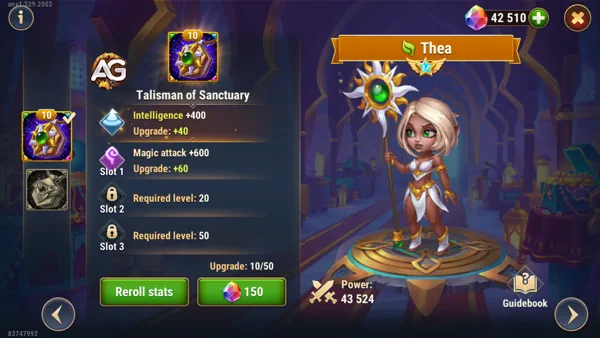

No reino em constante evolução de Hero Wars Alliance, cada herói apresenta um conjunto distinto de habilidades, adicionando profundidade e complexidade ao campo de batalha. Entre eles, Thea surge como uma curandeira versátil, capaz de mudar o rumo da batalha com suas poderosas habilidades de suporte.
Healing Beam:
Com Healing Beam, Thea direciona sua cura para o aliado com menos vida, oferecendo cura direcionada para manter sua equipe na luta. A potência dessa cura aumenta com o Ataque Mágico de Thea e o nÃvel de habilidade.
O Talismã do Santuário concede à Thea 2000 pontos de inteligência, que aumentam diretamente suas capacidades mágicas. Cada ponto de inteligência fornece:
3 pontos de ataque mágico (totalizando 6000 pontos).
1 ponto de defesa mágica (totalizando 2000 pontos).

Thea com o Talismã do Santuário, Hero Wars Alliance.
Talismã da Curandeira
O Talismã da Curandeira foca no aumento da sobrevivência e do potencial de cura da Thea. Ele fornece:
Robustez: Reduz todo o dano recebido dos inimigos quando a vida da Thea está baixa. Esse efeito se aplica a todos os tipos de dano (fÃsico, mágico e puro), exceto perda de vida causada por habilidades aliadas.
Thea, embora não seja tão proeminente quanto outros heróis, pode desempenhar um papel crucial em sua equipe quando evoluÃda estrategicamente. Aqui estão algumas sugestões para priorizar glifos, artefatos e skins para maximizar o potencial de Thea:
Vida: Aumentar a Vida de Thea ajuda a garantir sua sobrevivência no campo de batalha, permitindo que ela continue curando sua equipe.
Armadura: Aumentar a armadura de Thea pode ajudá-la a resistir a ataques fÃsicos, tornando-a mais resiliente contra certos inimigos.
Inteligência: Aumentar a inteligência de Thea pode melhorar sua habilidade de cura e aumentar o dano de suas habilidades.
Defesa Mágica: Embora menos prioritária do que outros glifos, aumentar a defesa mágica de Thea pode ser útil contra equipes com foco em habilidades mágicas.
Prioridade de Artefatos:
Livro: Priorizar o livro aumentará ainda mais o poder mágico de Thea, fortalecendo suas habilidades de cura e dano.
Anel: O anel pode oferecer benefÃcios adicionais de resistência e ataque mágico, aumentando a durabilidade de Thea no campo de batalha.
Arma (Defesa Mágica): Uma arma que aumente a defesa mágica de Thea pode ser útil para enfrentar equipes com alto dano mágico.
Prioridade de Skins:
Vida: Priorizar skins que aumentam a vida de Thea pode melhorar sua resistência e durabilidade.
Ataque Mágico: Aumentar o poder mágico de Thea melhora tanto sua capacidade de cura quanto seu dano.
Inteligência: Aumentar a inteligência de Thea pode melhorar ainda mais suas habilidades de cura e dano.
Armadura: Aumentar a armadura de Thea pode torná-la mais resistente a ataques fÃsicos, melhorando sua sobrevivência.
Ao priorizar esses atributos em glifos, artefatos e skins, você pode transformar Thea em uma peça valiosa de sua equipe em Hero Wars Alliance, maximizando seu potencial como suporte e curandeira.
Você gostou das nossas dicas do Guia da Thea? Há algo que não entendeu ou gostaria de sugerir mudanças? Convidamos você a se juntar à nossa sessão de comentários na página do Alexandre Games Blog. Não hesite em expressar sua opinião, clarificar suas dúvidas e compartilhar sua sugestões. Clique no botão abaixo para começar:


 Martha
Martha